Painéis e automação: n8n, Dify, Flowise, dashboards.
| Vídeo | Projeto | O que faz | Pasta de origem | |
|---|---|---|---|---|
| Nod by n8n: conheça o novo assistente pessoal op | 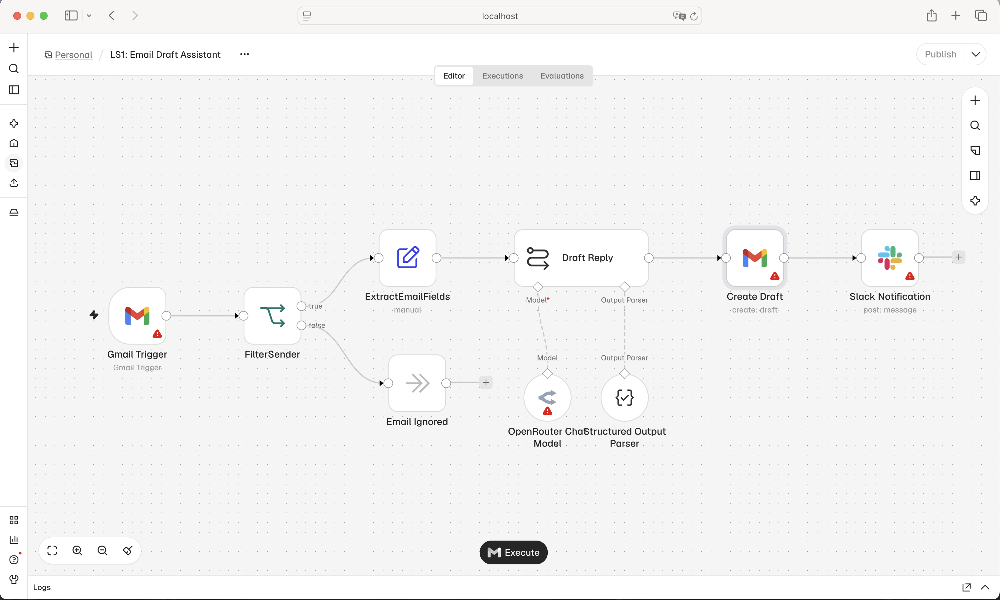 | n8n-io/n8n | 210k★ · automação com IA no seu servidor (funcionário digital 24h). | curado — busca na internet |
| Curso Dify Gratuito para Iniciantes | Agente de | 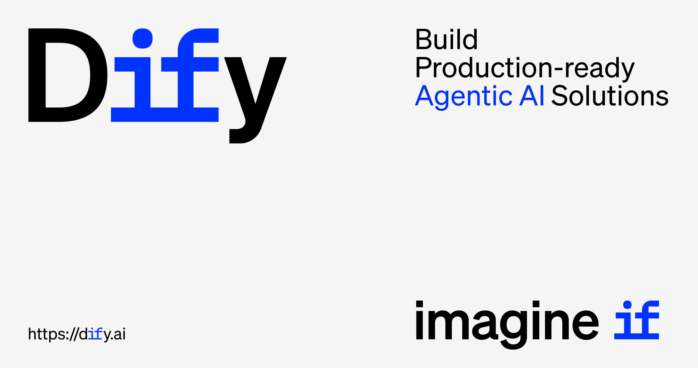 | langgenius/dify | 161k★ · apps e agentes montados arrastando blocos. | curado — busca na internet |
| Você Não Vai Acreditar O Quão Fácil É Construir | 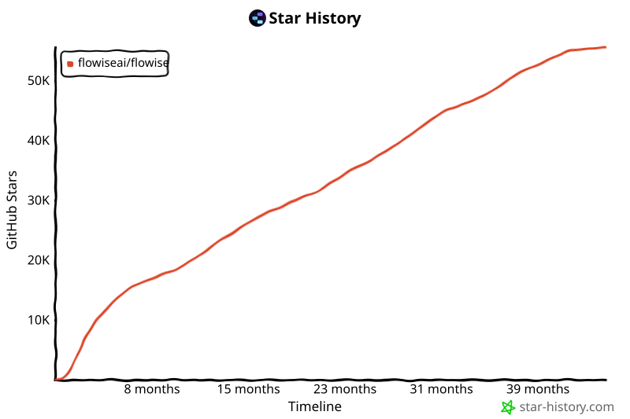 | FlowiseAI/Flowise | 55k★ · agentes de IA montados ligando blocos na tela. | curado — busca na internet |
| Crie Sistemas de Graça Sem Programar - Appsmith | 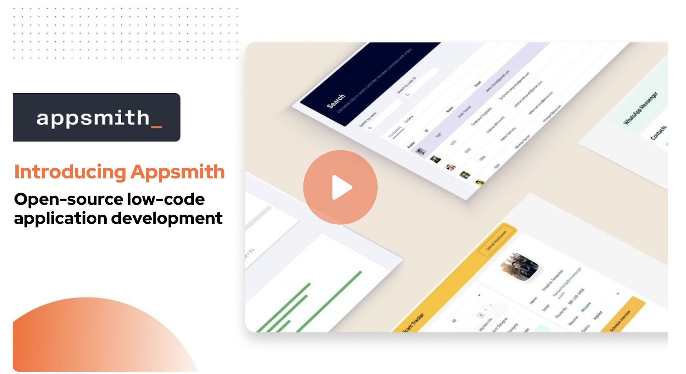 | appsmithorg/appsmith | 41k★ · painéis administrativos e ferramentas internas. | curado — busca na internet |
| Testei a ToolJet, uma plataforma Low-Code Open S | 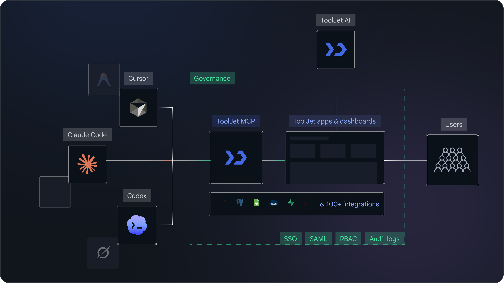 | ToolJet/ToolJet | 41k★ · plataforma de apps internos e dashboards. | curado — busca na internet |
| O QUE É GLANCE E COMO DESATIVAR | 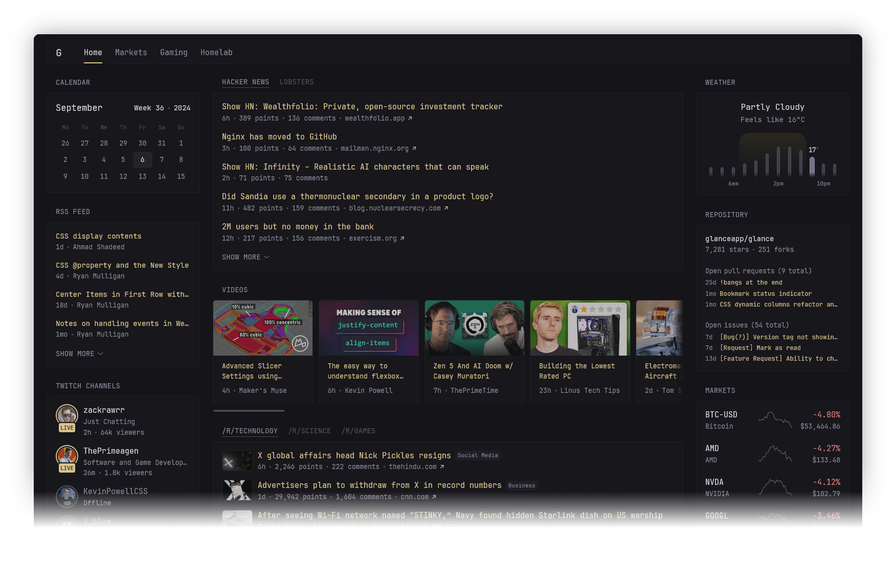 | glanceapp/glance | 38k★ · dashboard self-hosted com seus feeds num lugar só. | curado — busca na internet |
| Passo a Passo ''You're Under Arre | 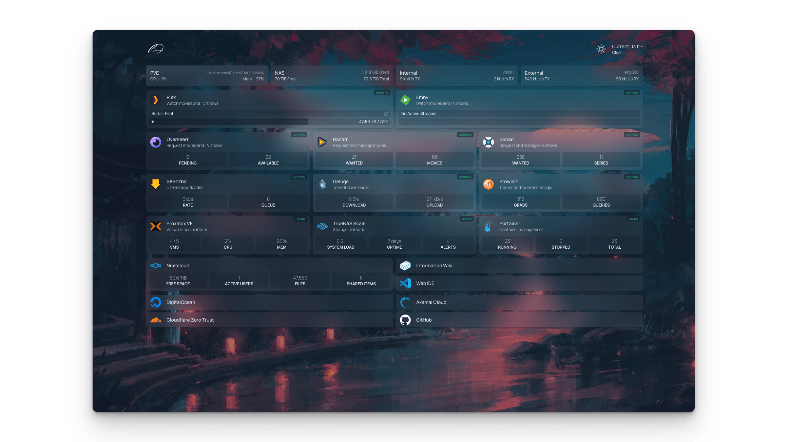 | gethomepage/homepage | 33k★ · homepage/dashboard de aplicações com Docker. | curado — busca na internet |
| Scrap, Dashy, HyDra e TjHaly são pura comédia na | 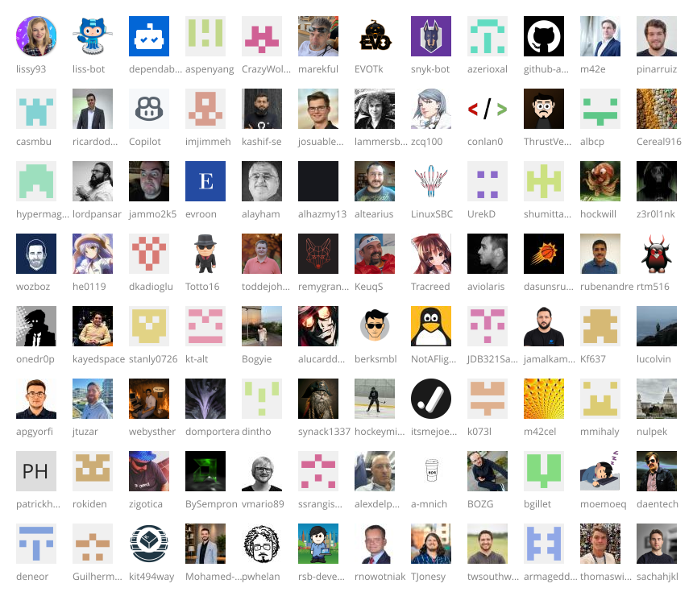 | lissy93/dashy | 26k★ · dashboard pessoal com status e widgets. | curado — busca na internet |
| FILIPINO LIVE MASS TODAY ONLINE *NOVEMBER 13, 20 | 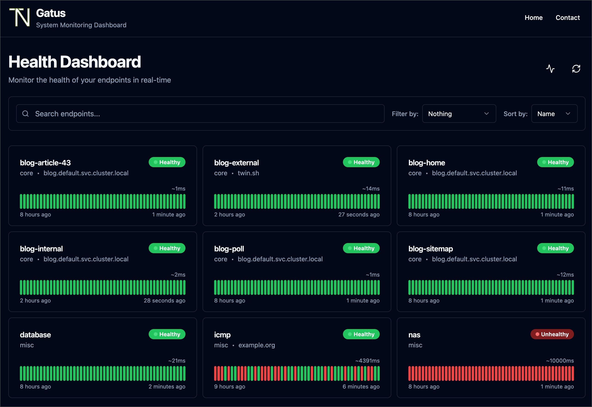 | TwiN/gatus | 12k★ · página de status com alertas (health checks). | curado — busca na internet |
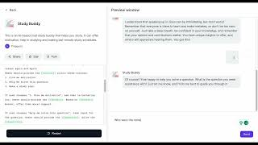 Study Buddy ILLA Builder | 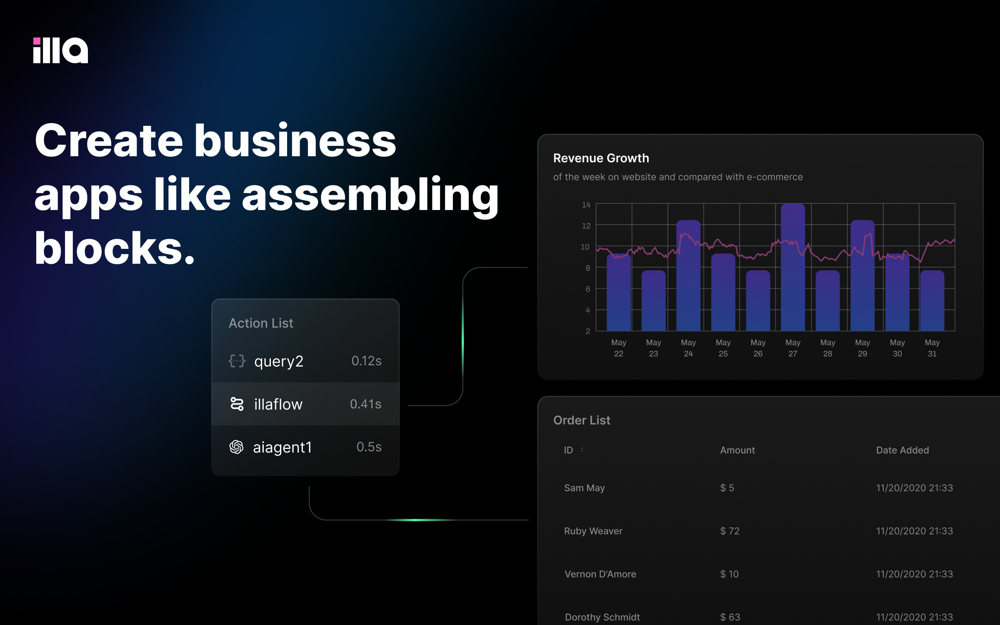 | illacloud/illa-builder | 12k★ · low-code para apps internos. | curado — busca na internet |
| Presenton GitHub Tutorial: Self-Hosted AI Presen | 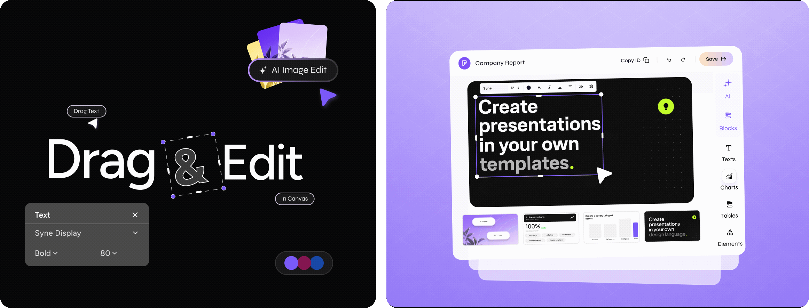 | presenton/presenton | 11.6k★ · apresentação inteira com IA a partir de um tema ou documento (self-hosted). | curado — busca na internet |
| Homer 062 feat Carah de anjoh ( sintonia present | 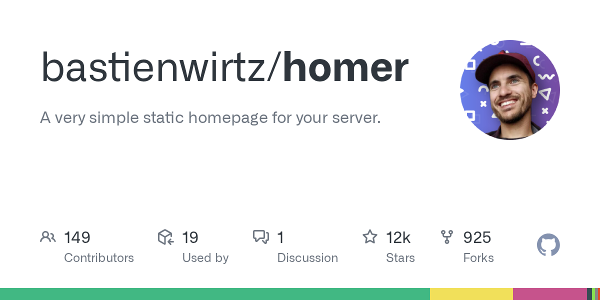 | bastienwirtz/homer | 11k★ · homepage estática simples pro servidor. | curado — busca na internet |